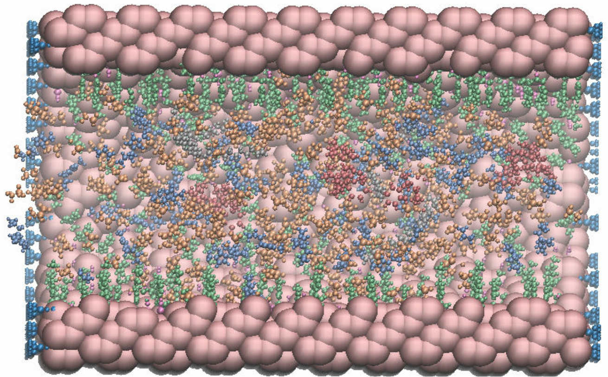

Simulation with molecules only in the pore¶
import poresim as ps
Set job inputs for your working station¶
Example Bash file for Horeka:
#!/bin/bash
#SBATCH --nodes=SIMULATIONNODES
#SBATCH --ntasks-per-node=SIMULATIONPROCS
#SBATCH --time=SIMULATIONTIME
#SBATCH --job-name=SIMULATIONLABEL
#SBATCH --error=SIMULATIONLABEL.e.%J
#SBATCH --output=SIMULATIONLABEL.o.%J
module load chem/gromacs/2019.6_cpu
COMMANDCHANGEDIR
COMMANDGROMACS
Simulation inputs
cpu = 75
job = {"min": {"file": "data/bash.sh", "nodes": 1, "np": cpu, "wall": "24:00:00"},
"nvt": {"file": "data/bash.sh", "nodes": 5, "np": cpu, "wall": "24:00:00"},
"run": {"file": "data/bash.sh", "maxh": 24, "nodes": 5, "np": cpu, "runs": 15, "wall": "24:00:00"}}
param = {"min": {"file": "../Simulation_Inputs/Pore/pore_eq_min.mdp"},
"nvt": {"file": "../Simulation_Inputs/Pore/pore_eq_nvt.mdp", "param": {"NUMBEROFSTEPS": 500000, "TEMPERATURE_VAL": 353.15}},
"run": {"file": "../Simulation_Inputs/Pore/pore_prod_run.mdp", "param": {"NUMBEROFSTEPS": 200000000, "TEMPERATURE_VAL": 353.15}}}
cluster_horeka = {"address": "",
"directory": "xxx",
"queuing": {"add_np": False, "mpi": "$DO_PARALLEL", "shell": "horeka.sh", "submit": "sbatch -p cpuonly "}}
Create a box object with the molecules contained in your system¶
pores = ps.Box("conf4")
pores.set_label("conf4")
pores.add_box("../PoreMS/pore.gro")
pores.add_pore("../PoreMS/pore.yml")
pores.add_struct("mol_list", "../PoreMS/pore.obj")
# Add gro files
pores.add_mol("CAT", "../Molecules/cat.gro", inp=4, section="pore", kwargs_gmx={"-try": 1000})
pores.add_mol("EDC", "../Molecules/edc.gro", inp=18, section="res", kwargs_gmx={"-try": 1000})
pores.add_mol("IM", "../Molecules/im.gro", inp=311, section="pore", kwargs_gmx={"-try": 50000} )
pores.add_mol("BF4", "../Molecules/bf4.gro", inp=600, section="pore", kwargs_gmx={"-try": 50000})
pores.add_mol("HEP", "../Molecules/1-heptane.gro", inp="fill", mass = 100.21, auto_dens=629.595, section = "res", kwargs_gmx={"-try":1000} )
# Add top files
pores.add_topol("../PoreMS/master_topol_pore.top", "master")
pores.add_topol("../Topologies/forcefield_new_red.itp","top")
pores.add_topol("../Topologies/ffnonbonded_new_red.itp","top")
pores.add_topol("../Topologies/ffbonded_new.itp","top")
pores.add_topol("../Surfaces_Molecules/tms.itp","top")
pores.add_topol("../Surfaces_Molecules/tmsg.itp", "top")
pores.add_topol("../PoreMS/grid.itp", "top")
pores.add_topol("../Topologies/cat.itp", "top")
pores.add_topol("../Topologies/bf4.itp", "top")
pores.add_topol("../Topologies/im.itp", "top")
pores.add_topol("../Surfaces_Molecules/im_img_surface.itp", "top")
pores.add_topol("../Topologies/1-heptane.itp", "top")
pores.add_topol("../Topologies/educt_oplsaa.itp", "top")
pores.set_job(job)
pores.set_param(param)
Note
If you only want to put molecules into the pore, it is better to add the larger molecules first to make sure that Gromacs can get them into the pore.
Create simulation objects and generate folder structure¶
sim = ps.Simulate("Simulation/pore/conf4-r", pores) # Single
sim.set_cluster(cluster_horeka)
sim.generate()
Finished simulation folder - conf4-r ...
Image of the system after filling the box¶
Inside view of the pore after running construct.sh. Colour code: catalyst, red; ionic anion, orange; ionic kation (on pore surface), green; ionic kation, blue; rectant, grey; heptane not shown.

